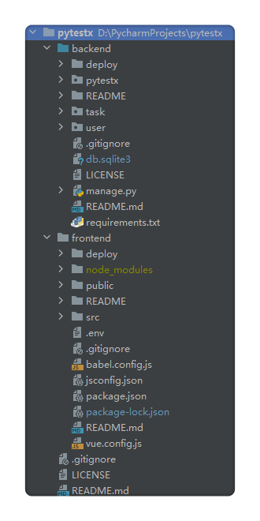
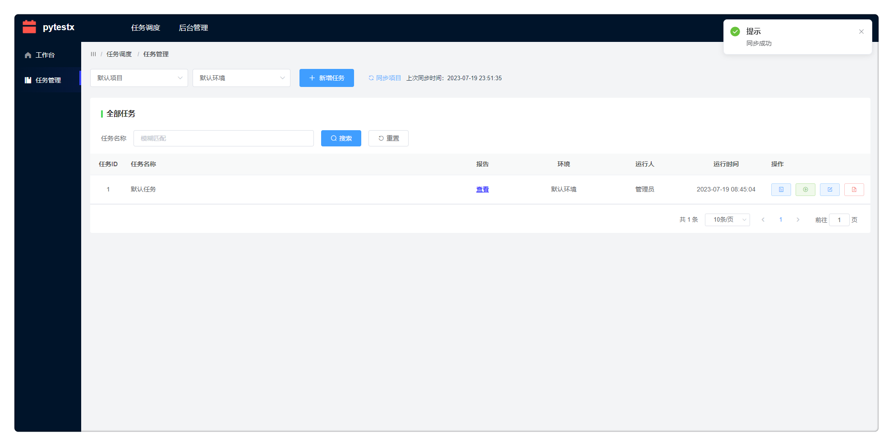
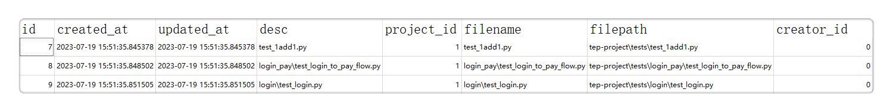
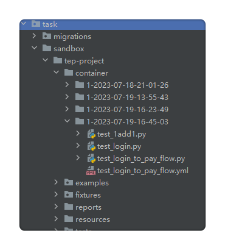
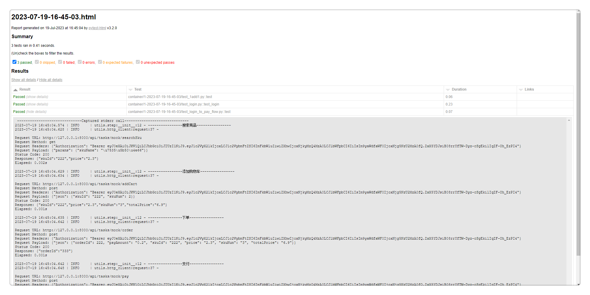
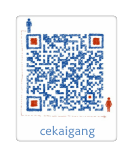

设计理念
聚焦于任务调度，接口自动化 80%本地编写，20%交由平台管理。
如果使用 pytest 做接口自动化，那么个人认为最好的编写工具是 PyCharm，任何低代码测试平台都无法取代。当然不会代码，或者不使用 pytest，那低代码测试平台，或者 yaml，甚至 excel 写自动化用例，都是可以接受的。而在使用 pytest 这个特定场景里面，要做平台化，平台的功能就需要仔细斟酌。既然编写用例最好使用 PyCharm，平台也就只能专注于用例编排和任务调度，即创建任务，关联用例，批量运行，以及定时，并行，通知等。
pytestx正是基于此理念设计的一款纯粹的任务调度平台。

平台架构

tep1.0.0 的延续
tep1.0.0 版本已经封版，在 pytestx 中对它进行了延续。
从 pypi 到 git
tep 是上传到 pypi 的，通过 pip 命令安装，使用 tep startproject 命令创建项目脚手架，代码结构分为项目代码和 tep 代码。改造后的 tep 只有项目代码，存放在：
https://gitee.com/dongfanger/tep-project.git
也就是说，在这个项目中，能看到整个 tep 全貌。之前的 tep 内核代码，比如 fixtures 自动寻找、内置 fixture、环境变量等，全部迁移到了项目代码里面，尤其是 conftest.py 的文件内容。pip install tep 顺带安装的依赖包，也整理到了 requirements.txt，按照说明安装即可。
pytest-html 替换 allure
由重到轻，化繁为简，pytest-html 能够满足数据+日志的报告需要，最新的 V3.2.0 版本的界面尚可。诚然 allure 漂亮，但安装 Java、下载 Allure、配置环境变量、安装 pytest-allure、添加 pytest hook 还是相对麻烦。更重要的是，要支持平台在线查看报告，减少存储占用，pytest-html 无疑是更好的选择。
下载脚手架
既可以从使用 git clone 下载代码，也可以从页面下载，就像 spring.io 那样：

fastapi 到 django
之前的示例代码是调用的 fastapi 启动的应用，pytestx 则将示例代码的接口换成了 Django 自身的 mock 接口。
teprunner 的延续
pytestx 的基础代码是从 teprunner 来的，对数据库设计、代码规范、项目结构做了优化。

任务管理

一、同步项目
同步项目，是把项目配置的 Git 仓库地址和分支，更新到本地沙箱中，项目之间完全隔离。

并把用例落库：

二、任务关联用例
创建任务，任务关联用例，就形成了新的用例集。
三、容器化运行
当前是假容器，未真正引入 Docker，所谓容器，是指每次运行，都将用例拉取到新的目录，批量执行：

四、生成报告
pytest 命令生成 html 报告，存放于 reports，借助于 Django 挂载页面，从页面点击，在线查看报告：

体验平台
下载源码：https://github.com/dongfanger/pytestx
安装依赖：前端（npm install）后端（pip install -r requirements.txt）
启动服务：前端（npm run serve）后端（python manage.py runserver）
即可畅快体验。
学习交流
添加微信 cekaigang，加入交流群，欢快讨论吧。

参考资料：